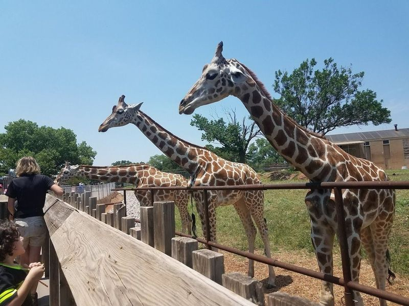
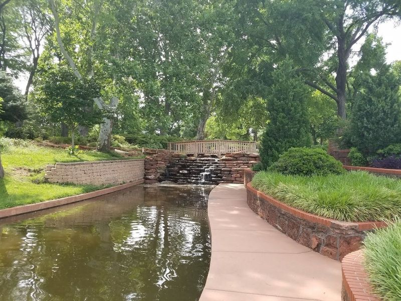
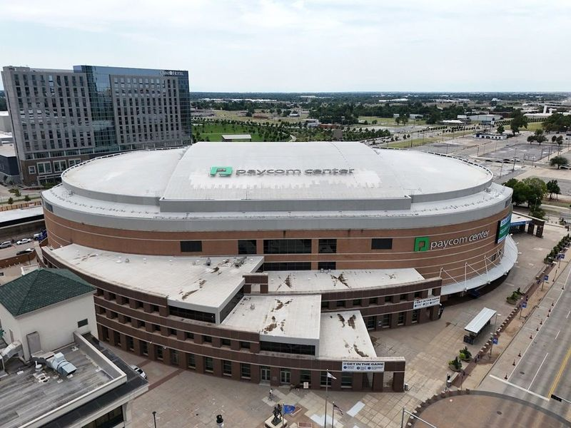
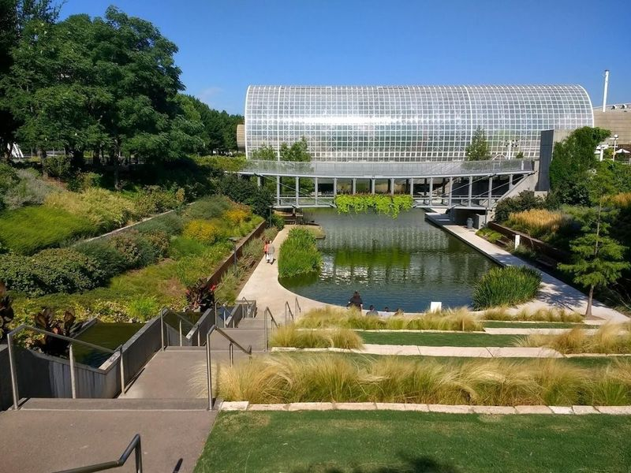
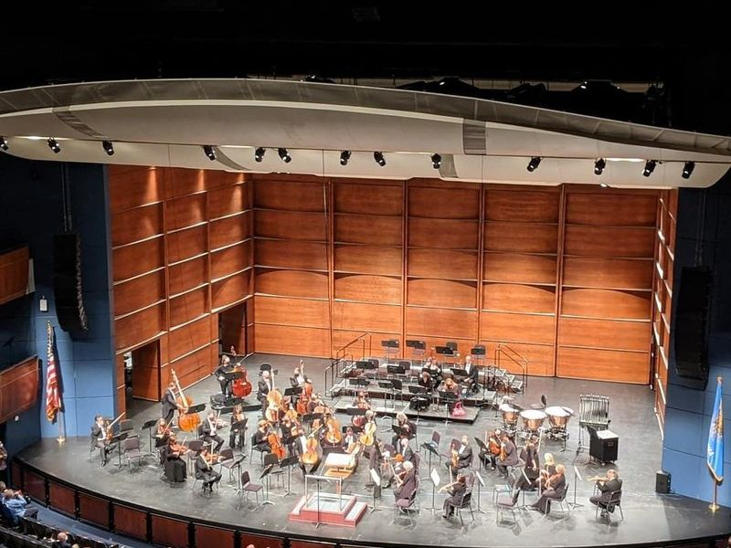
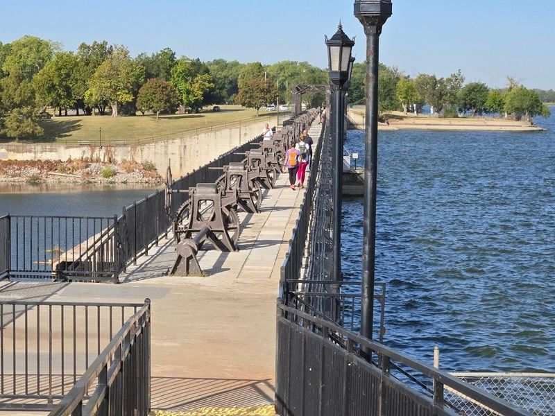
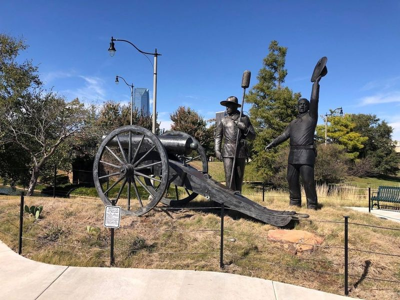
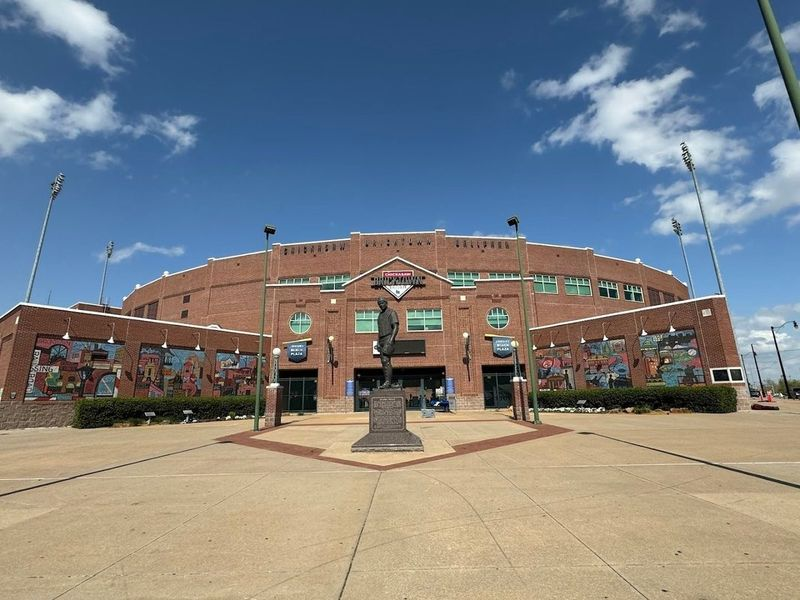
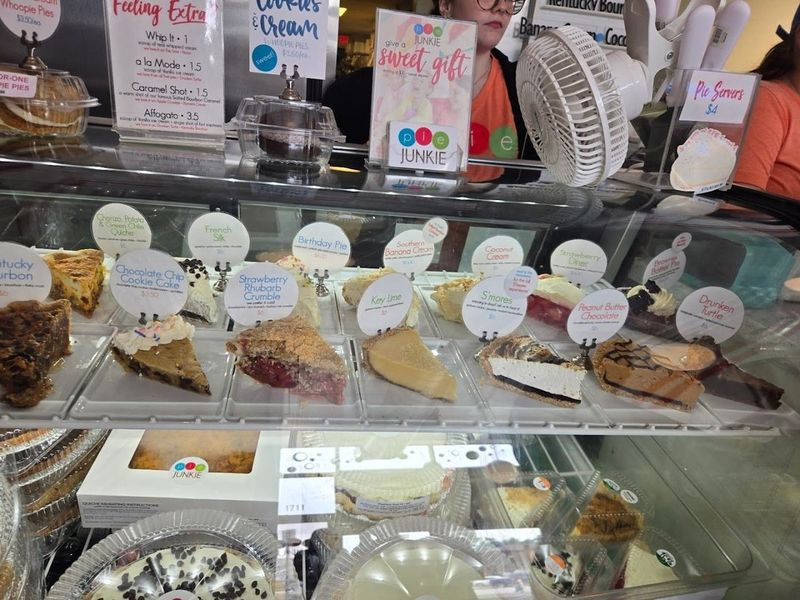
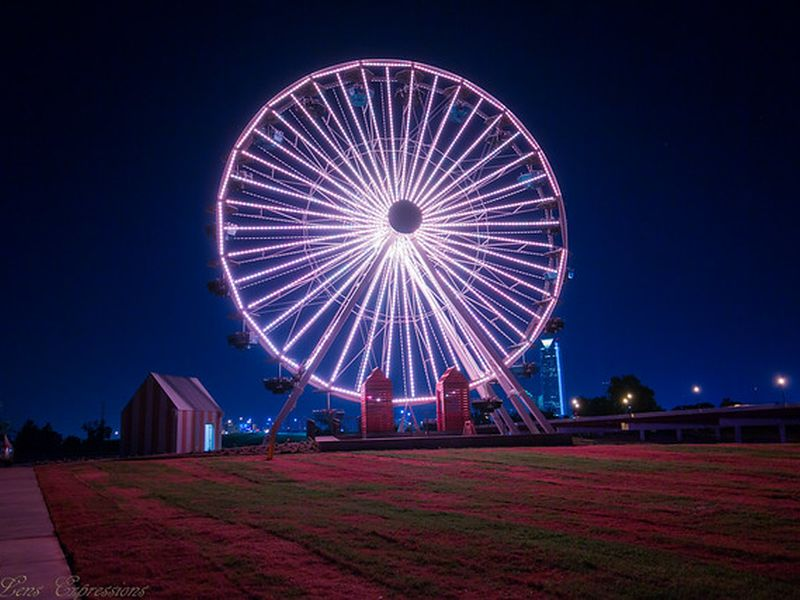

Explore Oklahoma City, OK
A Brief History
Oklahoma City sprang up in a single day during the Land Run of 1889 when settlers claimed homesteads in former Unassigned Lands. State capitol oil wells, Bricktown warehouse districts, and Memorial Museum exhibits record how prairie town-site auctions, Dust Bowl migration, and 1995 federal-building bombing remembrance shaped a Great Plains government and energy centre.
Attractions Map
Top Sights & Activities

Oklahoma City Zoo
The Oklahoma City Zoo is a sprawling 119-acre attraction that houses over 1,900 animals from various habitats. Visitors can enjoy up-close encounters with creatures like sea lions, rhinos, and brown bears on behind-the-scenes tours. For those seeking less intimidating interactions, there are interactive habitats such as the Flamingo Mingle and the Herpetarium Wetlands Walkway.

Will Rogers Gardens
Frontier City is a western-themed amusement park that includes thrilling rides, attractions for kids, and water rides. The park also features multiple shows and eateries to enjoy. It's known for its high-speed thrills and exciting attractions, making it a must-visit for adrenaline junkies.

Paycom Center
Paycom Center, formerly known as Chesapeake Energy Arena, is the home court of the NBA's Oklahoma City Thunder and a popular venue for major concerts and events. With a seating capacity of 18,203, it hosts thrilling NBA games that draw large crowds. The arena is conveniently located in downtown OKC, making it easily accessible from the city's nightlife, dining options, accommodations, and key attractions.

Myriad Botanical Gardens
In downtown Oklahoma City, Myriad Botanical Gardens & Crystal Bridge Tropical Conservatory is a 15-acre urban oasis that offers a variety of attractions for both locals and visitors. The gardens feature formal gardens, a tropical conservatory, and even a dog park. Visitors can enjoy the serene green space with streams, an interactive playground, and live music at the contemporary band shell.

Civic Center Music Hall
The Civic Center Music Hall, a beautifully renovated Art Deco building in downtown Oklahoma City, offers a entertainment experience. Hosting local music and dance groups as well as touring Broadway shows, this venue features three theaters that showcase a variety of performances. Home to the Oklahoma City Philharmonic Orchestra and the Oklahoma City Ballet, it also presents annual series by nationally acclaimed artists.

Overholser Park
Nestled in the heart of Oklahoma City, Overholser Park is a delightful urban oasis that has been captivating visitors since its establishment in 1919. This scenic reservoir boasts a historic dam and offers an array of recreational activities, including boat ramps and a fishing pier for those looking to cast their lines. The park surrounding Lake Overholser features well-maintained trails perfect for walking, jogging, or biking—ideal for both leisurely strolls and more vigorous exercise.

Centennial Land Run Monument
The Centennial Land Run Monument is a remarkable tribute to the historic Land Run of 1889, which opened up the Oklahoma Territory for settlement. This unique monument stands proudly on a hill overlooking Lake Overholser, symbolizing its significance during that pivotal moment when over 50,000 eager settlers raced to claim their land.

Chickasaw Bricktown Ballpark
The Chickasaw Bricktown Ballpark is an open-air stadium that can seat up to 13,000 people. It is located in Bricktown, an area in Oklahoma City that has been revitalized by the stadium's opening in 1998. The Dodgers, a minor league team based at the ballpark, have four league titles, two conference titles and thirteen division titles.

Pie Junkie
Pie Junkie, located in the Plaza District of OKC, is a small, locally-owned bakery that offers a wide variety of traditional and inventive pie fillings. Whether you visit in the morning or late afternoon, indulging in a slice of their delicious pie is always appropriate. Known for producing over 20,000 pies annually, Pie Junkie has become Oklahoma City's go-to spot for high-quality sweet and savory pies.

Wheeler Ferris Wheel at Wheeler District
The Wheeler Ferris Wheel anchors the Wheeler District redevelopment south of the Oklahoma River on former fairgrounds land. The 100-foot wheel offers enclosed gondola rides with views toward downtown Oklahoma City and the Boathouse District. The surrounding plaza includes lawns, food vendors, and seasonal events along the river trail system.